The company in numbers, the app in three parts
Projects and planning
Jobs split into phases (prep, build, show, load out) with their own dates, kit and crew.
Warehouse and stock
Labels, scanning out and in, availability you can trust, repairs and inspections.
Crew and light finance
Freelancer offers, call sheets, timesheets and staff leave, then quotes, invoices and exports.
Where the build is
Loading the latest entry…
Latest: on the day, and the certificates a job needs
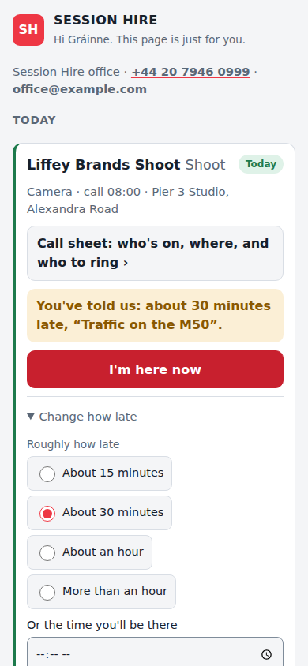
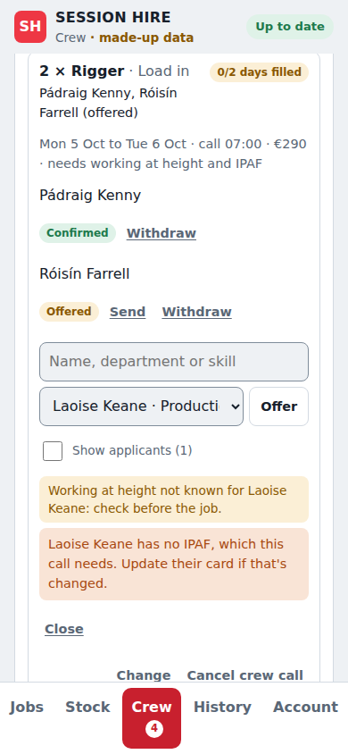
Jobs, the start of Phase 1
Each job has its client, venue, status and phases, and each phase shows how its days will read on the calendar. Crew are asked for from the job, and a rename reaches the crew too. Cancelling a job cancels its crew. (Decision 0007)


Confirmed jobs onto Google Calendar
Connect a Google account on the Account tab and pick its calendar. Every day of every confirmed job, from today on, goes on it in the format crew know, with the venue, the day's crew by name and a link back, and follows the job within seconds. Anything changed by hand in Google is put back each night. (Decision 0008)


Crew invites and their answers
With the switch on the Account tab on, crew offered or booked on a confirmed job are invited to its days on Google Calendar, as ops do by hand today, and their Yes or No there counts as their answer, as on their link. Guests hear from Google only when it matters. A No from someone already booked is shown to the office rather than unbooking them. The switch starts off. (Decision 0009)


The week and month planner
Week and Month, beside the jobs list, lay out every job with anything on, or every person, a row each. Each day says which phase it is, as the calendar titles it, and how many of its crew are booked. Confirmed jobs are solid and quotes dashed; a day is green once its crew are booked and amber while some are still to find. Clashes are listed above, in words, with the job to open: booked while unavailable, or booked twice, and offers that would clash if they said yes. Worked out on each device, so it needs no signal. (Decision 0010)


Bringing in the jobs already on Google Calendar
The office picks a calendar the connected account can see, its own or an organiser's shared with it, and a first day, and the app shows every job it would bring in before anything is saved: phases and days read from titles as they're typed today ("Nissan - Build 1/2"), the venue from the location, and the crew from the guests, booked, offered or declined by their answer. Jobs can be unticked or renamed, and people on the invites chosen for the crew list. Bringing in saves it all in one go; looking again shows only what's new and lists events changed in Google since. Nothing is written to Google and nobody is emailed. (Decision 0011)


Everyone's own bookings in their own calendar
Each person has a feed of the jobs they're booked on for Google, Apple or Outlook Calendar, at an address of its own that can only show bookings: it's safe in a calendar they share, and New link retires it. Freelancers find it on their page, the office copies it from the Crew tab, and staff who also work jobs have it on the Account tab. The server answers calendar apps from memory, so their hourly looks don't wake the database. The last part of Phase 1. (Decision 0012)
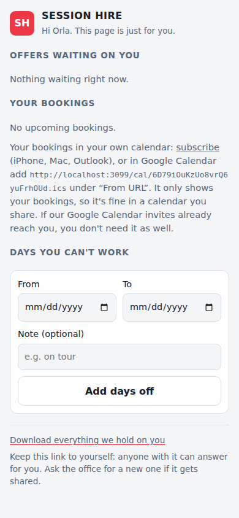
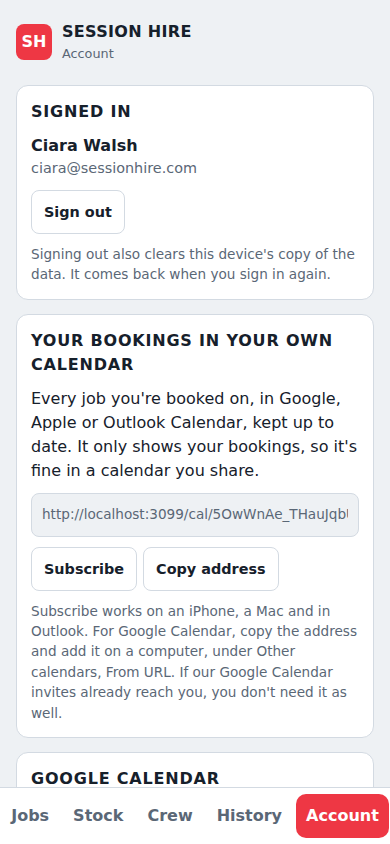
The warehouse catalogue, the start of Phase 2
The Stock tab lists products by department, with a search that finds a product, an item's number or a serial; a scanner that types a label's number and Enter opens the item. A product is numbered, each one labelled SH- and six digits, or counted, like cables. Numbered kit can be counted until it's labelled, and each item added takes one off the count, so the total is right from the first day. A number is never used twice, cases hold items and counted stock, and each place shows everything kept there. It all works with no signal. (Decision 0013)
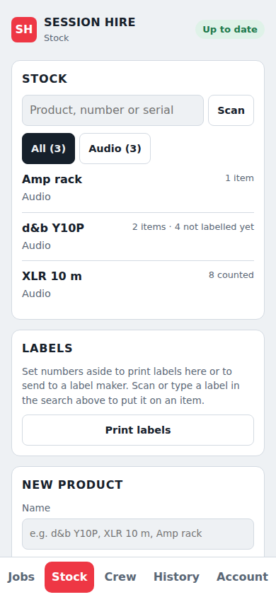
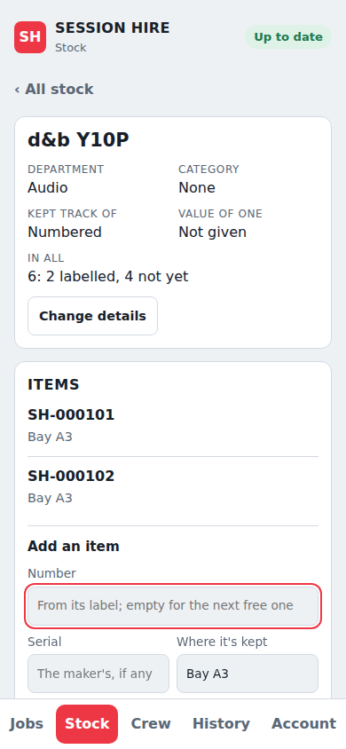
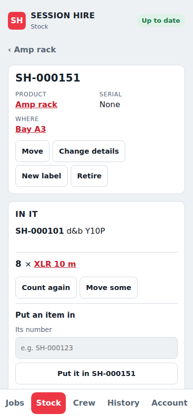
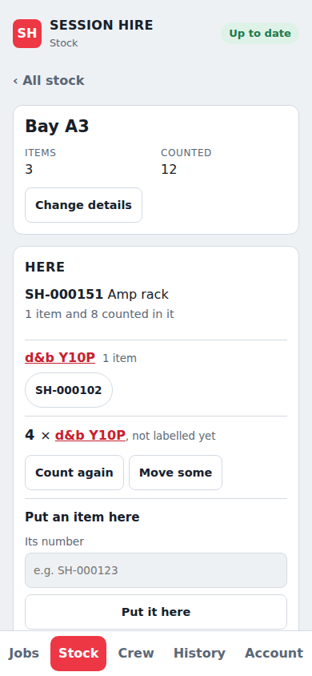
Kit on jobs, with shortages
A job's page lists the kit it needs from the stock list, by department, for the whole job or one phase; a line for the whole job covers the days between its phases too. Each line says whether there's enough on its days once the other confirmed jobs have theirs, and if not, by how many, when, and who has the rest. Enquiries and quotes are pencilled in: checked as if they went ahead, never counted as taken. Short is never refused: a short line offers to subhire the ones it's short. The jobs list flags kit short, the Stock tab lists it, and a product's page lists its jobs. Worked out on each device, so it needs no signal. (Decision 0014)
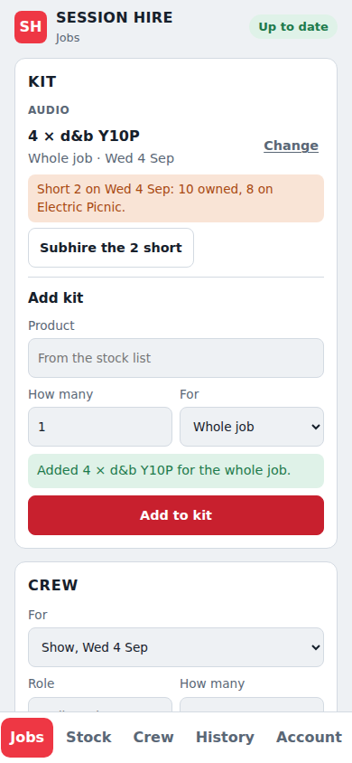
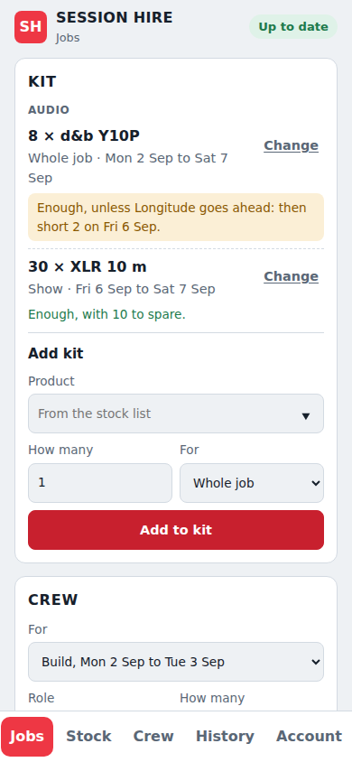
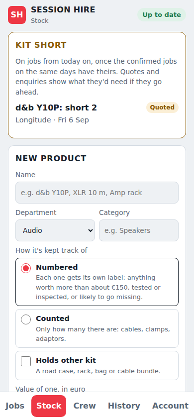
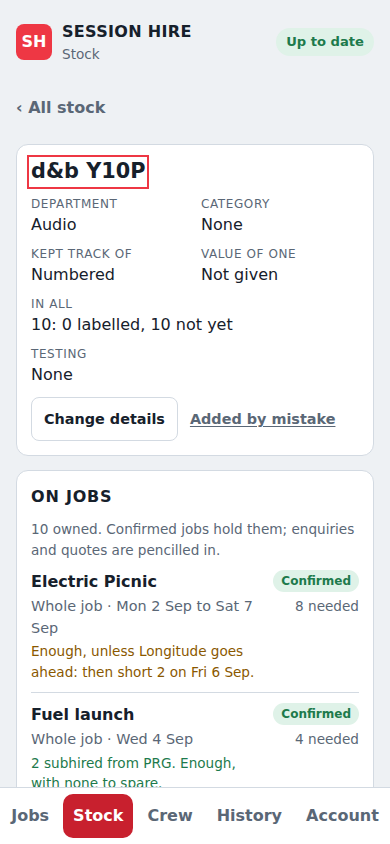
Printing labels
Numbers are set aside a run at a time before their labels are printed, so an item given the next free number never takes one waiting on a roll. A label is black on white: a QR code holding just the number, the number in large type and "Session Hire", and the product's name on an item's own label. They print here from the browser, one to a page on a label printer or 65 to an A4 sheet, or from a spreadsheet a label maker prints rolls and metal tags from. Scanning a label that isn't on anything yet offers to put it on an item; the product and place stay for the next one, so labelling a shelf is a scan and Enter each. (Decision 0015)
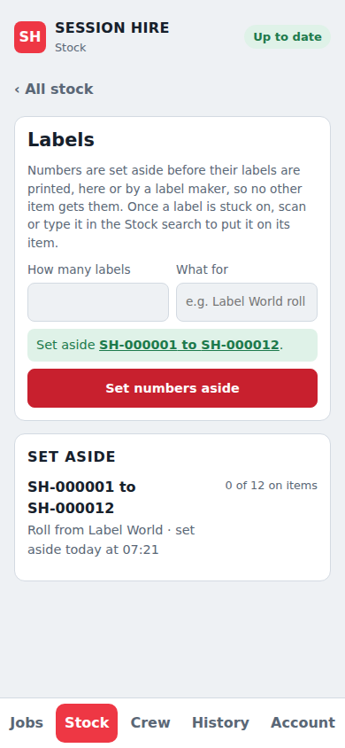
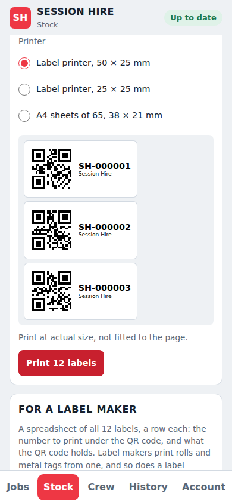
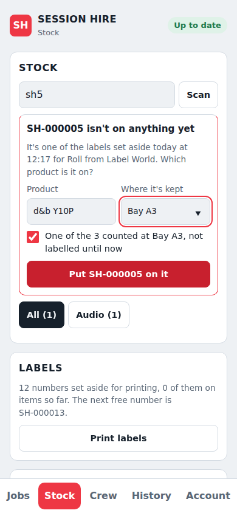
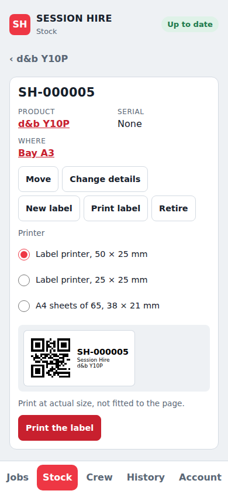
Scanning with the camera
Scan beside the Stock search turns the phone's camera on, in the app. Point it at a label and its item opens; a maker's serial in a barcode finds its item too, on Android. A label on nothing yet asks what it's on, with the camera still on and made small, so labelling a shelf is a scan and a tap each. It reads one label after another, a label held still only once, with a flash, a beep and a buzz. It works with no signal, and the pictures never leave the phone. (Decision 0016)
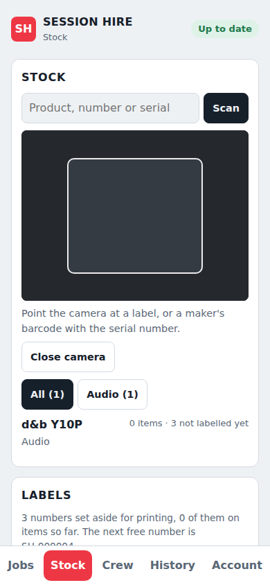
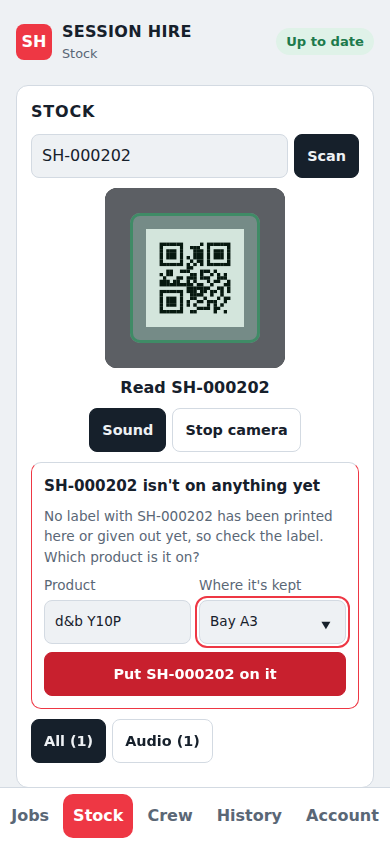
Pick lists, and kit out and back
Each job has a pick list, from its Kit card: every product on the kit, how many the job needs from Session Hire's own, how many are out, and where to find the rest, place by place with the item numbers there. Going out, each label scanned with the camera or a scanner is out with the job, and the answer comes at once; counted kit is counted out, and a case takes what's in it along. A scan is never refused: one that doesn't match the plan (not on the kit, too many, still out with another job) is kept and says so. Coming back, the same page says what's still out. It all works with no signal, and every phone agrees once it catches up. (Decision 0017)
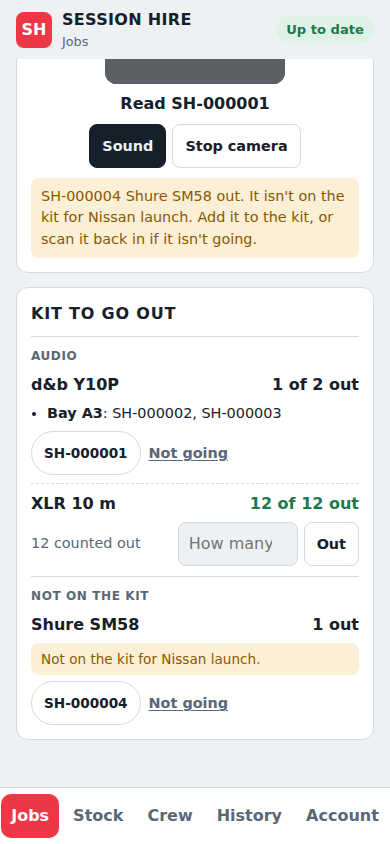
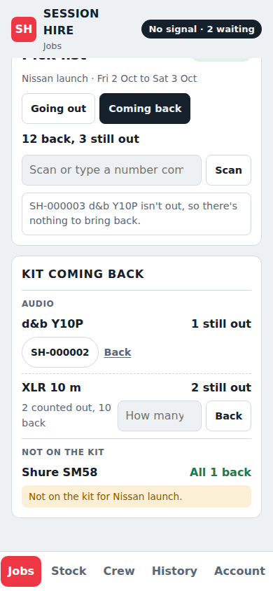
Faults, missing kit and repairs
Coming back on a pick list, an item just scanned can be reported damaged, with what's wrong and whether it can still go out; an item still out can be marked missing, and so can counted kit. A missing item that turns up and is scanned is marked found. The Stock tab's Faults and repairs card is the repair list, each with repair notes and how it ends: fixed, not faulty, found, or written off, which retires the item or takes counted kit off the count. Kit missing, or damaged and not fit to use, isn't counted as owned, so a job's kit shows it short. It all works with no signal. (Decision 0018)
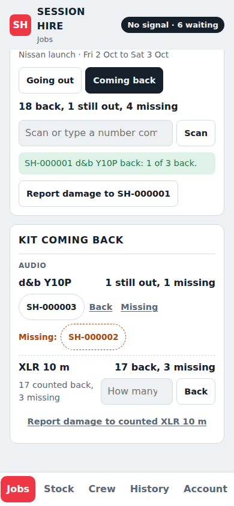
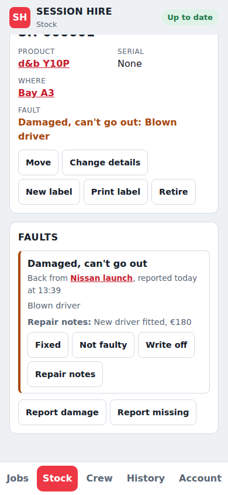
Made-up data, and starting fresh
Until the real stock and crew lists are in, the Account tab puts a few weeks of made-up jobs, crew and stock into an empty app, to try every part of it: speakers short between two jobs, offers to chase, items to label, a pick list. Every screen says "made-up data" beside its name while it's in. Start fresh deletes everything but the staff accounts, after a backup, once "delete everything" is typed; every phone empties itself and drops what it had waiting, so nothing made up comes back. (Decision 0019)
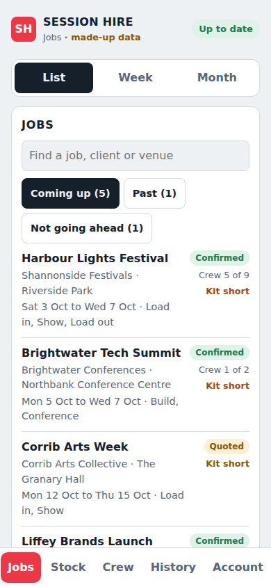
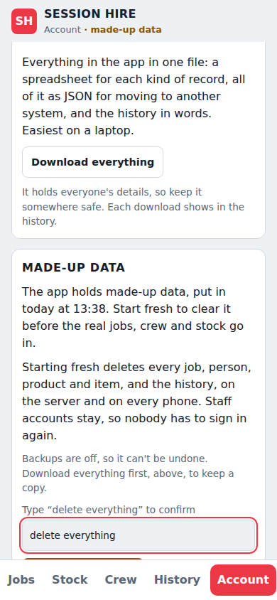
PAT tests and thorough examinations
A numbered product says how often its items need a PAT or a thorough examination. Each test is recorded on the item, passed or failed, with the day and who did it, or a shelf is tested as a batch by scanning each item as it passes, with It failed for one that didn't. The app works out when each is next due; the Stock tab lists what's failed, overdue or due in the next 30 days. Failed or overdue kit isn't counted as owned, and scanning it out for a job warns. It all works with no signal. (Decision 0020)
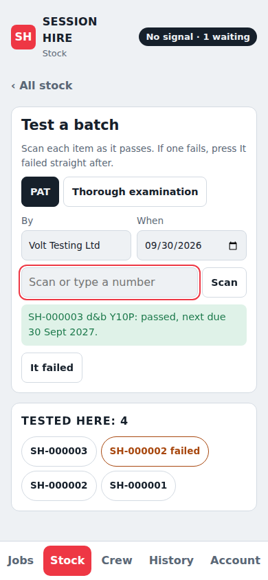
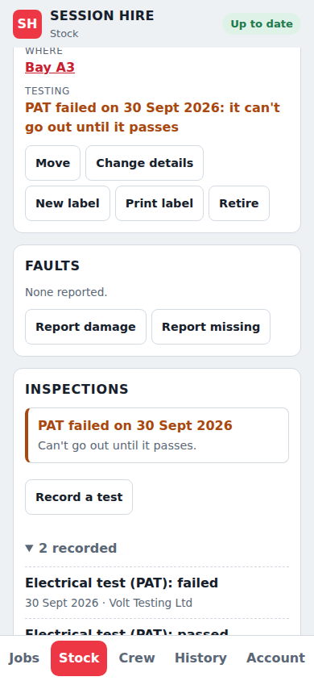
Call sheets
Each phase of a job has a call sheet: its days, where with a map and the venue's access notes, the running order, who's on for each call and when, and who to ring on the day. The office's shows everyone with their numbers, who's still to answer, the kit and the client, prints on A4 and copies for a WhatsApp group. Everyone who has said yes gets their own on their private link, with no app: who else is on by name only, and the one number of the contact on the day, who sees the crew's numbers and the kit on theirs. (Decision 0021)
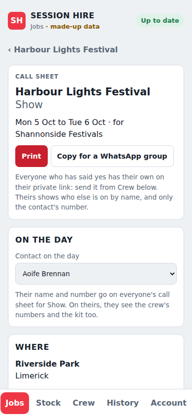
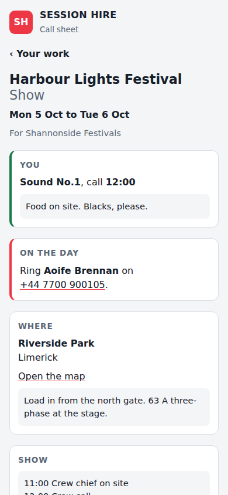
Timesheets
Freelancers bill a day rate, so a timesheet is the days worked at the booking's agreed rate, and extras such as parking or mileage. From a booking's first day the freelancer sends theirs from their private link, with no app, their booked days already ticked. The Crew tab lists those to approve and those not in yet; the office changes anything that needs it, says why, and approves it in one step, or fills one in for someone. The freelancer then sees what was approved and what changed. (Decision 0022)
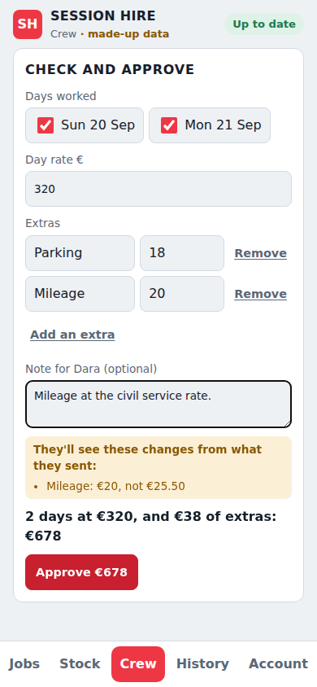
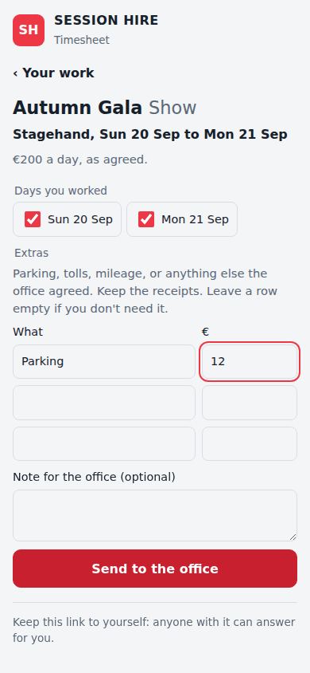
Crew booking, started early
The office offers a job and sends it by WhatsApp, text or email. The freelancer answers from their own link, with no app or login, and can take only some of the days. Nobody is double booked, and on a shortlist the first to say yes gets it. (Decision 0002)


Design system
Colours, type and components from the app, now in Figma. Same names as the code, light and dark. Below: the Crew area rebuilt only from the library.

Three rules everything else follows
Open and flexible
"The closed ecosystems, their way is the only way."
- Full API, webhooks and export of everything, any time.
- Phases, statuses, roles, fields and templates are settings, not code.
- Any warning can be overridden with a note; overrides are logged, not blocked.
- New departments arrive as modules on one core, like Crewbox.
Meet freelancers in the middle
"A they come to us, not a meet in the middle."
- No app or login needed to get work: SMS, WhatsApp, email and calendar invites with one-tap links.
- Availability read from their own calendar, busy or free only.
- Certificates and bank details entered once.
- Hours become a ready-made invoice they approve.
Offline is normal
Being on site means the internet may be poor.
- Reading and common actions work with no signal: scan out and in, report a fault, accept a job.
- Nothing is lost: every change waits on the device until the server confirms it.
- Real time when online: changes show on other screens within a second.
A gig is a row of all-day calendar events
Read from the calendars on 29 September 2026: 58 events from June to October. Each phase of each day is its own event, titled Project - Phase n/m, with the venue as location and the crew invited as attendees. Accepting the invite is the crew's confirmation.
What the calendar carries
- Two ops staff organise; crew are invited. About two thirds of attendees use personal Gmail, Outlook or iCloud addresses.
- Descriptions are usually empty. When filled, they hold a kit list (
4 x d&b Y10P) and a run of show. - A shared Session Hire Gigs calendar exists but is empty.
What that means for the design
- The unit of scheduling is the phase-day, so the model has projects with phases.
- Calendar sync must produce this exact shape so crew see no change on day one.
- RSVPs map onto crew assignment status, both ways.
- Freelancers need magic links, not company logins.
Six tools, the same five blind spots
Rentman, TeamTrack, Current RMS (being renamed OnRent Events), Flex, HireHop and easyjob, compared from vendor sites and reviews in September 2026. The last column is what Session Hire's system aims for.
Where not to compete: Rentman's quoting and invoicing breadth and HireHop's core stock handling. Matching them is enough. Full detail and sources in the competitor audit under Full documents.
Phones send requests; the server decides
Each device keeps a local copy of what its user needs and an outbox of changes. Changes are sent as requests ("add 4 × Y10P to Nissan") that the server confirms or turns down with a reason, so the rules hold whichever device a change comes from. When two people offline both book the last four speakers, both bookings stand and both show short until someone sorts it, rather than one silently vanishing. Things that already happened in the real world, like a scan, are always accepted and reconciled afterwards.
Walk through it: two people, four speakers, no signal
Only 4 are free that week. Both phones show the booking as pending.
Each request carries its own id, so a retry is never counted twice.
The server keeps both as asked, and every device works out that the week needs 8 and there are 4. Short is a warning, not a refusal: the count may be unfinished, or the rest about to be subhired (Decision 0014).
Dara sees "Short 4: 4 owned, 4 on Nissan", taps Subhire the 4 short and adds the supplier. Both jobs then have enough. Nothing was lost, and the shortage showed on every screen until it was sorted.
What each device keeps
| Who | Synced to their device |
|---|---|
| Ops and office | Live projects from 30 days back to 12 months ahead, full catalogue, crew |
| Warehouse | Catalogue, assets, cases, locations, pick lists for the next 14 days |
| Crew chief on a job | That job: phases, crew and phone numbers, kit list, run of show, venue |
| Freelancer | Their own offers and bookings, call times, venues, their documents. Never other people's rates. |
The data at a glance
- Job for a client, with a status (built)
- Phase: prep, build, show, load out… (built)
- Equipment line by department (built)
- Crew requirement per phase (built)
- Quote, versioned
- Client, contact, venue (built)
- Product: the model (built)
- Asset: one item, hidden id (built)
- Identifier: QR, serial, RFID… (SH numbers built)
- Container: case, rack, bundle (built)
- Movement: every scan (built)
- Maintenance: faults and tests (built)
- Person: staff, freelancer (built), supplier
- Documents with expiry
- Availability: days off (built)
- Assignment: offered → confirmed (built)
- Timesheet
- Price lists and rates
- Quotes and invoices in EUR
- VAT 23% and 13.5% per line
- Freelancer costs
- Dashboard and exports
| Layer | Choice | Why |
|---|---|---|
| Language | TypeScript throughout | Same as Crewbox; shared types |
| App | React, Vite, installable PWA; Capacitor for scanning later | Same as Crewbox |
| On the device | SQLite in the browser, IndexedDB fallback | Real availability queries offline |
| Server | Fastify with shared schemas | Same as Crewbox |
| Database | Postgres, EU region, point-in-time recovery | Date-range queries for availability |
| Sign-in | Google Workspace for staff; a private link for each freelancer | Built (Decisions 0002 and 0003) |
| Sync engine | Our own, on the Crewbox pattern | Decided and tested (Decision 0001) |
| Backups | Nightly, to a separate bucket, each proved by a test restore | Built (Decision 0004) |
| Error alerts | Sentry, EU data, from the server and every phone; uptime and backup checks | Built (Decision 0005) |
| History and export | Every change kept with who, when and on what device; one file with everything as spreadsheets and JSON | Built (Decision 0006) |
| Jobs | Clients, venues, jobs and their phases, changed field by field so two people's edits both stand | Built (Decision 0007) |
| Google Calendar | The app writes confirmed jobs to one calendar, as one connected account, on each change and in a nightly check | Built (Decision 0008) |
| Crew invites | Crew are guests on their days' events; their answers are read back every two minutes by asking Google what changed, so the database sleeps | Built, switch off (Decision 0009) |
| Planner | The week and month by job or by person, with clashes flagged, worked out on each device from what it already holds | Built (Decision 0010) |
| Calendar import | The jobs on an organiser's calendar come in after a look at everything first; each event-day is remembered, so looking again shows only what's new | Built (Decision 0011) |
| Personal feeds | A read-only calendar feed for each person, at an address worked out from their private link; every feed kept in memory and rebuilt only after a change | Built (Decision 0012) |
| Warehouse catalogue | Products numbered or counted; items with a hidden id and a Session Hire number never used twice; places; cases up to five deep; numbered kit counted until it's labelled | Built (Decision 0013) |
| Kit on jobs | Each job's products and how many, for the whole job or a phase; shortages per day worked out on each device, with confirmed jobs holding kit and enquiries and quotes pencilled in; subhire on the line | Built (Decision 0014) |
| Labels | Numbers set aside a run at a time by the server, so none is given out twice; labels printed from the browser or by a label maker from a spreadsheet; a label not on anything yet put on an item by scanning it | Built (Decision 0015) |
| Scanning | The phone's camera reads labels in the app, one after another, with no signal: the phone's own barcode reader on Android, a QR code reader in the app elsewhere; an item's label opens it, a new label is put on an item | Built (Decision 0016) |
| Pick lists | Each job's kit, where to find it and what's out; kit scanned or counted out and back in on a phone with no signal, a case taking what's in it along; a scan that doesn't match the plan kept and said; jobs going out soon and kit still out on the Stock tab | Built (Decision 0017) |
| Faults and repairs | Kit reported damaged or missing, on return from a job or at any time, items and counted kit alike; the repair list with repair notes, closed as fixed, not faulty, found or written off; kit that can't go out taken off what's free for jobs; a missing item scanned is found | Built (Decision 0018) |
| Inspections | PAT tests and thorough examinations of lifting gear recorded on each item, one at a time or a batch by scanning, kept for good; how often set per product; when each is next due worked out on the phone; failed and overdue kit taken off what's free for jobs and warned about when scanned out | Built (Decision 0020) |
| Call sheets | Each phase's day sheet worked out from what the app holds: in the app with no signal, on A4, copied for a WhatsApp group, and on each freelancer's private link; the contact on the day sees the crew's numbers and the kit, the rest of the crew who's on by name only | Built (Decision 0021) |
| Timesheets | One for each confirmed freelancer booking, from its first day: the days worked at the day rate and the extras, sent from the freelancer's link with a plain form; checked, changed and approved by the office in one step, with what was sent kept beside what was approved | Built (Decision 0022) |
| Made-up data | Weeks of made-up jobs, crew and stock put in through the server's own rules, to try the app before the real data; Start fresh deletes everything but the staff accounts after a backup, and every phone drops its copy and what it had waiting | Built (Decision 0019) |
Keep the calendar, change nothing on day one
The system writes to the shared Session Hire Gigs calendar in today's format and listens for changes in seconds. Each project runs in one of two modes, and new projects switch to app-led once Phase 1 is live.
Built so far: app-led writing (Decision 0008)
A member of staff connects one Google account on the Account tab and picks one of its calendars: Colly's test calendar first, Session Hire Gigs later. The app then keeps every day of every confirmed job from today on there, in today's format, and takes a job off when it is cancelled. Event ids are worked out from the job, so a retry never makes a double, and a hidden mark keeps the app to its own events. It runs when something changes and checks the calendar once a night, so the database can sleep. Past days are never changed.
Built so far: crew invites and their answers (Decision 0009)
A switch on the Account tab, off to start with. When on, everyone offered a place on a confirmed job, or booked on it, with an email address in the app, is a guest on its events on their days, invited by the connected account; crew can't see each other's addresses. Their Yes or No counts as their answer through the same rules as their link: the first to say yes gets the place, a No to every day declines, Maybe waits, and a No from someone already confirmed is flagged for the office instead. Google emails guests only when they are added or taken off, or the title, date or place changes. Every change reads the event first, so guests added by hand and answers given in the meantime are kept. The server asks Google every two minutes which events changed and only touches the database for a new answer. Next: edits flowing back for calendar-led jobs.
Built so far: bringing jobs in (Decision 0011)
The jobs already on the organisers' calendars come into the app from the Jobs tab: all-day events are read from a chosen day to two years ahead, the title split at its last " - " into job and phase, a job's days in a row made into phases, locations matched to venues and guests to people. Everything is shown before it's saved; TBC or hold brings a job in pencilled in. Each event-day is remembered by Google's own id, so the other organiser's calendar or a second look brings in only what's new. The organiser's calendar keeps these jobs' events, so the app doesn't write them to the jobs calendar too.
Calendar-led: ops can keep working in Google. Moving an event moves the phase; RSVPs update crew status.
Importing history
Built: the jobs on an organiser's calendar come in grouped by the text before the last " - ", phases in order, guests matched to people, and job sheets kept in the notes as written. Kit lists stay in the notes for now; turning them into kit lines can come once the stock list has the products to match them against (Decisions 0011 and 0014).
Personal feeds
Built: every person has a feed of their own bookings that works in any calendar app, at a read-only address that's safe in a shared calendar, on their page, the Crew tab and, for staff, the Account tab. The server answers from memory, so calendar apps don't keep the database awake. (Decision 0012)
Office to site, and back again
Crewbox runs on site with no internet: chat, push-to-talk, running order, patch, lighting and the show log. Session Hire's system covers everything before and after. They meet twice per event.
Show pack as files
- Patch CSV and lighting CSV in Crewbox's own formats
- Running order and a crew list with the join QR
- The crew chief loads it on the box
Direct link
- Keyed import: event, channels, named crew, running order
- Show log readable by key, as JSON
- Asset tag on fault reports
- Optional crew clock-in for timesheets
From zero labels to trusted availability
No stock is barcoded yet. The recommendation is a QR code plus a readable number on every item, scanned with phone cameras first, with RFID kept for later where it pays off most: cables.
The number is what people read out; the QR code, which holds just the number, is what phones and scanners read. The item's real id is hidden, so a worn label can be replaced without losing its history.
Built so far: the catalogue, kit on jobs, labels, scanning, pick lists, repairs and inspections (Decisions 0013 to 0020)
The Stock tab holds every product, numbered or counted, each numbered item with its Session Hire number, the places kit is kept and the cases it lives in. Numbered kit can be counted until it's labelled, so the app knows everything owned from the first day and shows how far the labelling has got. Labels can go on over weeks: an item takes the number on its label, typed or scanned, or the next free one. A number is never used twice, even after a new label. Jobs now list the kit they need, and each line says whether there's enough on its days, so shortages show before the day; until the counting is done, some will be counts not finished yet. Labels print here or from a spreadsheet a label maker works from, on numbers set aside so none is given out twice, and scanning a new label puts it on an item: the product and place are picked once, then each label on the shelf is a scan and Enter. Phones scan labels with their camera in the app, with no signal too. Each job has a pick list saying where its kit is, and kit is scanned out to the job and back in, with every scan kept even when it doesn't match the plan. Kit that comes back damaged or doesn't come back is reported as it's scanned, goes on the repair list, and isn't counted as free for jobs until it's fixed or found. PAT tests and thorough examinations are recorded on each item, or a shelf at a time by scanning, and kit that failed or is overdue is kept off jobs the same way.
| Method | Cost per tag | Reads from a phone browser? | Role |
|---|---|---|---|
| QR code | Cents | Yes Android native, iPhone via a library | Primary |
| Code 128 barcode | Cents | Yes | Reads manufacturer serials |
| UHF RFID | €0.50 to €4 | No needs a handheld reader | Later, for cables and bulk |
| NFC | €1 to €3 | Android only | Optional backup |
| Bluetooth tracker | €5 to €40 | No | Find a few high-value cases |
| GPS tracker | €35 to €100 + SIM | No | Vans |
Labels by kind of kit
- Most gear: polyester, thermal transfer with resin ribbon, laminated.
- Road cases and rigging: riveted or bonded metal tags.
- Cables: heat-shrink or wrap-around flag labels, or tracked as bundles.
- Rigging hardware: engraved mark, which the law requires anyway.
Cases hold things; scanning the case moves them
Rollout
Starter hardware is roughly £4,000 to £6,000: two rugged Android scanners, pocket and ring scanners, a label printer and a portable labeller. Prices are estimates; get supplier quotes.
Irish rules to build in
- Lifting gear (S.I. 299/2007): thorough examination every 6 months for lifting accessories and hoists, 12 months for items that support lifting gear, a register, and a lasting mark on each item.
- Electrical equipment (Reg. 81): user checks before use, periodic inspection, and testing where appropriate, at risk-based intervals.
- Anything overdue cannot be scanned out without an override.
Build order
Each phase replaces something people do today and is useful on its own. The riskiest piece, offline sync, is proven first.
What's settled and what's open
The source documents
Everything above is drawn from these files in the repo's docs/ folder. They are rebuilt into this page whenever they change.
Built from docs/ on branch main of legofsalmon/sess-sys. To update: edit a markdown file, then run node scripts/build-hub.mjs.